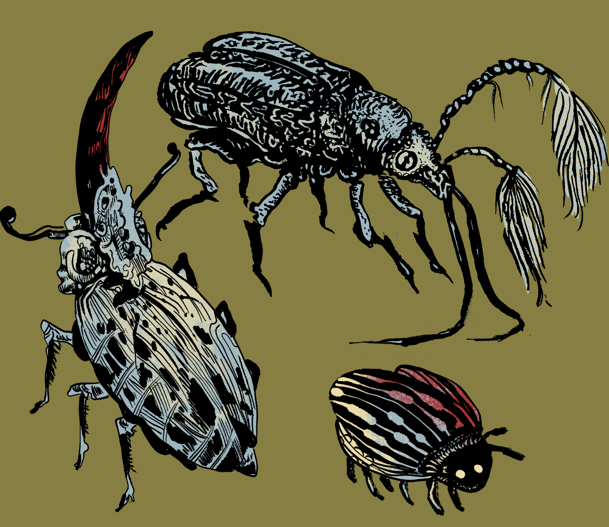
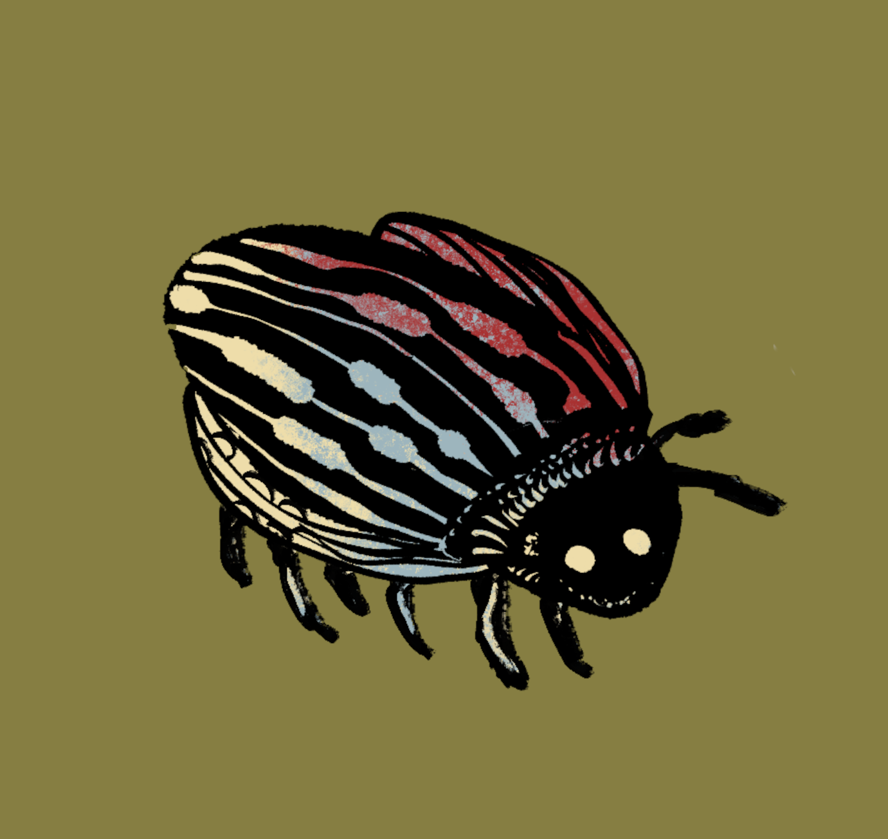
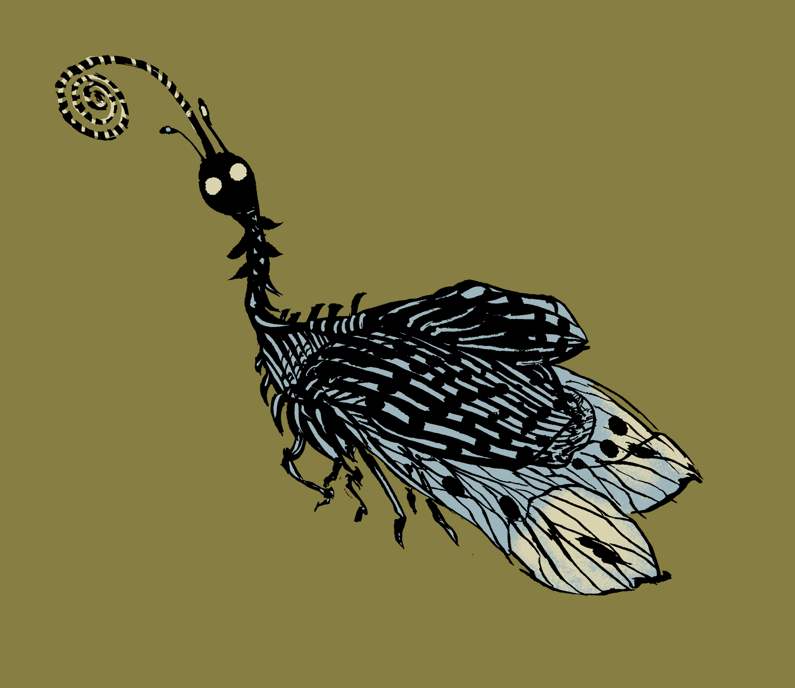
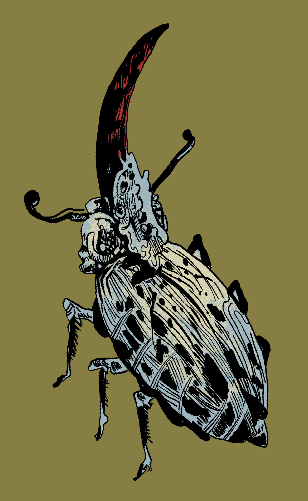
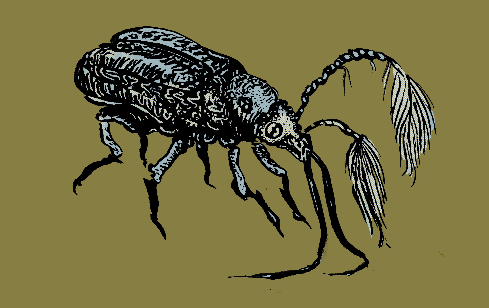

The following is a selection of entries written for the botanical journal The Lantern by a now-notorious explorer upon returning from his 2 year expedition. The expedition went so poorly the explorer has been charged with woeful incompetance and the wealthy patron who funded the expeiditon is sueing the explorer for conning him out of his funding.

I have been finding these dastardly bugs on my clothes since we've landed. They have an exceptional ability to cling to clothes and even worse; find folds of the clothes to hide in. More than once I have missed one before settling into my tent for the night. The bug then crawls out of my discarded coat and into the rest of my personal affects. In the middle of the night I am awoken by some horrible stench inside the tent, prompting me to throw everything I can outside the tent in hope of getting the insect and all the affected away from me so I can have a night's rest. One time the bug had crawln all along the bottom of by cot, blasting my nostrils with the stench all night. The stench dissipates quickly, only lasting up to 12 hours, but while it is active the stench is horrible.
The smell itself isn't from any massive secretion we can determine from the bug itself nor is the material affected in any physical way. The bug simply applies the smell to whatever it walks across. The men have begun experimenting with the creatures, hoping to find some way to prevent or repel it. The bug only applies the stench in the night, meaning that if it crawls on your clothes during the day you cannot detect it by smell. And the insect doesn't apply to the smell is not applied to any material naturally occuring with the jungle. It does not apply to any leaves, tree bark, earth, grass, vines, rocks, that we have tested. It seems the insect only affects the materials we have deigned to bring with us, various fabrics, textiles, twine, canvas, steel, aluminum, glass, paper, leather, etc. It's almost as if the bug only reacts against materials not native to its habitat, and only at night. One wonders what possible survival advantage this would bring.
Ultimately the bug is harmless. It doesn't bite or burrow, or carry any disease. It's largest function seems to be a nuisance for men retiring to sleep, warranting the men to thoroughly check all other their clothes for where one of the bastards might be hiding. And if one is missed, we will learn about it as one of our compatriots awakes in the morning with everything thrown out of his tent or stinking to high hell.

This dainty creature scuttles along the ground during the morning, feeding off smaller grubs and worms, and goes to sleep after the morning dew has evaporated. It sleeps in the nooks of trees until the night, when it takes to the sky. Seeing one of these creatures float, it looks like a light whisp on the air more than any fluttering insect. I havn't been able to study exactly how these creatures seem to float the way they do, it may be an illusion created by their wings, or possibly it's due to the unique shape of the wings themselves. While I can't describe how it is done, the look is enchanting. When they fly as wisps they are as delicate as a handkerchief floating along the breeze, yet still able to fully control their movement through the air, deftly dodging branches and leaves as if it were the most natural thing in the world.
And when two night moths encounter each other these whisps begin to sway back and forth, each adapting to the frequency of the other's swaying until they have fully synchronized their swaying. Simply two moths swaying together is remarkable, but what is truly exceptional is when a larger group of moths encounter each other in the night. They begin by swaying and synchronizing together, and the typical moth seems to settle into a simple background role, while other moths will break from the pattern to perform what I can only describe as performance. Most of the moths will form a background dance, simple swaying with a fixed period, but others will break from the pattern to twirl, flip, or begin swaying at a slightly odd, almost polyrhythmic pace, going from perfect synchronization to a special pattern that is beautiful to behold.
I do not know the reason these moths perform this ritual. At first I assumed it to be some sort of mating ritual, the performers are males trying to attract the background dancing females attention but as far as I've observed the moths do not perform any sexual contact after the dance is done, the group simply disperses after an amount of time. The amount of time the dance lasts has also been an object of curiosity. For the dances are getting longer, at a linear pace. I've managed to observe this dance on 29 occasions, and while time between when I successfully observed them is irregular when graphed on the date they observed the trend is increasingly linearly, down to the second.
(graph)
I've tried to tie this increase in time to anything I can think of, lunar cycles, the equinox, temperatures, none of this seems to fit. Shortly after arriving on this voyage 4 months ago one of my traveling companions went missing, a faint and delicate man of weak constitution, a student I agreed to let come along the journey as a favor to his father. We were traveling to a new location to make camp shortly after landing when someone in the night heard him stir in his tent. The man who heard him simply went back to bed, but when we arrived in the morning we saw his tent completely abandoned, he left all his supplies and clothes behind, as far as we know he only took the notebook he was keeping his notes in. You see, if one were to track the linear graph backward and find the time when the graph began at 0, it would be the night after he first disappeared.
I personally find this conclusion very concerning. If the moths have seemingly morphed their dances based on a time when my companion went missing that not only possibly invalidates much of the data I've collected if I cannot find the source, it also fills me with much worry. Could my companion have seen something that caused him to abandon our expedition to go into the jungle? When we searched the surrounding area we didn't find any signs he was attacked by a wild animal, or any signs of a struggle. It seems he saw something, and simply left, and the moths have increased their dancing relative to that.

This specimen is usually seen in large groups, something very unusual for species with horns because traditionally large horns are an indicator of male species that compete for the female's attention. But since landing we have never indentified any females of this species. As far as we can tell the species is entirely men! This indicates that either the females are exceptionally hard to find, or the species lacks the typical sexual dimorphism.
One of the men observed while out cataloging native plants the prevalence of this species in areas bearing a specific brown-green fern common to low canopies (see: SPECIMEN #301). The insect has never been observed more than 50 yards away from the fern. This has led one of the men to conclude the fern is actaully the female of this species, due to the common habit of SPECIMEN #298 rubbing its horn on the rough inner stalk, and trying to keep other males away from the fern whilst doing so. The fern has never been observed to react to this stalk but the theory is fascinating none-the-less.
Sadly it seems the ferns are facing some evolutionary troubles. In the months since we've arrived the ferns have been harder and harder to find, and the ones we have managed to find are either dead or horribly sickly. The ones we found upon first arriving seemed entirely health, but turned dead and grey a few weeks after we first found it. Some of the men worry we have caused the ferns to die but we have no idea what activities we would have undergone to cause this. In any case we've instructed the men to take extra care when interacting with these ferns, despite them continuing to perish.

This was the first insect catalogued after landing, and it's first impression endeared it to the men due to its comical droopy appearance. However in the months we’ve been here this endearment has slowly turned to dread. For the second day of the expedition was met with a horrible sickness sweeping through the camp, men vomiting into buckets and bedridden with horrible fevers and the occasional delusion. We have only spotted this insect on four occasions, and each time by itself crawling along a tree, and after each of those four visits from this bug the sickness has returned. This has led to the men treating its apparances as a dire omen. Some may call our correlation of these two events and disease unscientific due to a small sample size, but in our defense I leave here a recount of a horrible nightmare one of the men suffered while bedridden with the disease.
“I feel myself walking onto the continent for the survey, catalgoing plants and insects. After some writing and measureing I turn behind me and everything I have touched has withered and died. My hands are covered in strange and intimidating tattoos. Then something booms over my head and its so terrifies me I run away for cover. The sound is almost like a scream in a mixture of pain and fury like nothing I have every heard, a horrible ripping and tearing from the hateful sky in retribution for what is being done. I try to get away from the horrible voice by crawling under a tree, moving earth with my fingers and scrambling into a passageway I've found under the tree roots. With much effort I wriggle my body between the massive roots into the tight passage. My arms are pinned at my side and I can just barely reach an arm out in the claustrophobic tunnel to reach forward. My hand brushes up against something. With some effort I strike a match and what's staring at me is the omen. That insect and it doesn't skitter away. It is there, staring at me. This insect is not a lone creature but part of something larger, and it hates me. It hates us all and desires nothing short of our complete annihilation. I wonder if I could escape but no, it's too tight. The insect doesn't move though, it sits and stares.
After some struggling I feel the once solid tree above me begin to shake. The roots are constricting me, crushing me. Normally in a dream I would wake here but I can feel the femur snap under the weight, lancing pain up my leg. I try to hold up my arm to stop the roots but my forearm breaks into three pieces. I can’t even catch my brief to cry out as roots crush my windpipe. The roots roll and crush my body for what felt like much time before I finally wake up. When I wake the doctor tells me my body is fine, but I still feel I haven't fully regained my motor control."